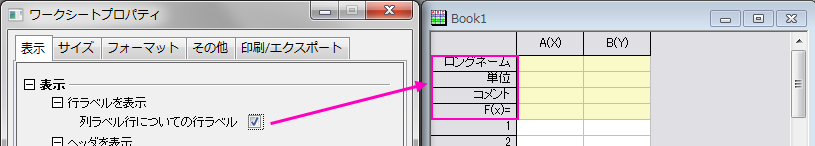

(ワークシートプロパティ) 「表示」タブ
WksProperties-Dialog-View-Tab
ワークシートプロパティの表示タブでは、ワークシートの要素(行や列のヘッダ、グリッド線など)の表示を制御できます。
「表示」タブ
| 行ラベルを表示 |

|
| ヘッダを表示 |
|
| グリッド線を表示 |
改ページプレビューラインのチェックを付けると、印刷領域が青い線で囲まれ、水平、垂直方向のページ区切りには青い点線が表示されます。印刷プレビューと同様に表示されますが、ヘッダ情報の繰り返しが表示されません。
|
| 列ラベル行の編集 |
列ラベル行の編集ボタンをクリックすると開く列ラベルの行ダイアログボックスで、列ラベル行の外観を編集することができます。
列ラベルの行ダイアログでは、列ラベル行の追加、削除、並び替えなどが行えます。また、列ラベル行の表示/非表示や、行高さを指定できます。
- カスタム列ラベル行を追加するにはリストを右クリックしてユーザ定義パラメータの追加をショートカットメニューから選択します。リストの最後までスクロールし、列ラベル行の名前を編集します(デフォルトでは「UserDefinedn」となります)。
- 列ラベル行を削除するには、右クリックしてショートカットメニューから削除を選択します。削除できるのは、ユーザ定義のラベル行に限られ、組み込みの列ラベル行は削除できません。
- 列ラベル行の順番を入れ替えるには、 グリッドセル をラベル列の左側までドラッグし、ワークシートヘッダ行のラベルの順序を再配置します。
- 列ラベル行の表示/非表示を制御するには、「表示」のチェックボックスを使用します(チェックを付けて表示、外して非表示)。
- 高さ列の中をクリックして、列ラベル行の高さを編集します。高さはテキストの高さに相対します。
|